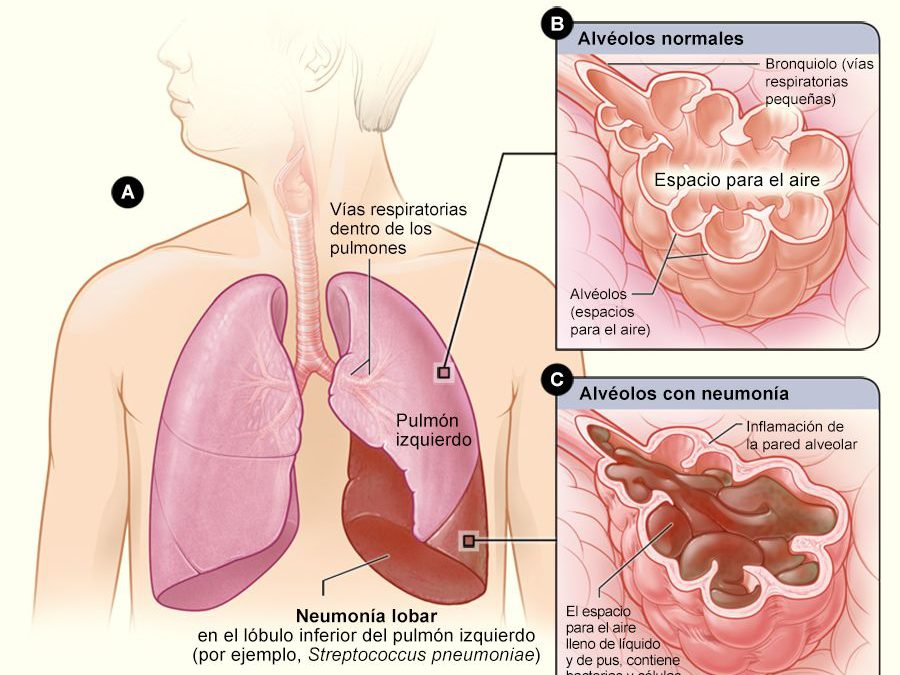

Neumonía
Tabla de Contenido
Este artículo cubre la neumonía adquirida en la comunidad. Este tipo de neumonía se encuentra en personas que no hayan estado recientemente en el hospital u otro centro de atención médica, como un hogar de ancianos o un centro de rehabilitación. La neumonía que afecta a las personas que están o que fueron dadas de alta recientemente de un centro de atención médica, tales como hospitales, se denomina neumonía intrahospitalaria (o neumonía asociada a la atención médica).
Causas
La neumonía es una enfermedad común que afecta a millones de personas en los Estados Unidos todos los años. Pueden causarla microbios llamados bacterias, virus y hongos. En los adultos, las bacterias son la causa más común de neumonía.
Las formas como se puede contraer la neumonía incluyen:
- Las bacterias y virus que viven en la nariz, los senos paranasales o la boca pueden propagarse a los pulmones.
- Usted puede inhalar algunos de estos microbios directamente hacia los pulmones.
- Usted inhala alimento, líquidos, vómitos o secreciones desde la boca hacia los pulmones (neumonía por aspiración).
Sistema respiratorio
La neumonía puede ser causada por muchos tipos de microbios. El tipo más común de bacteria es el Streptococcus pneumoniae (neumococo). La neumonía atípica, con frecuencia llamada errante, es causada por otras bacterias.
Un hongo, denominado Pneumocystis jiroveci, puede causar neumonía en personas cuyos sistemas inmunitarios no funcionan correctamente, especialmente personas con una infección avanzada por VIH. Los virus, como el de la gripe y el SARS-CoV2 (que causa la COVID-19), son también causas comunes de neumonía.
Los factores de riesgo que aumentan las probabilidades de contraer neumonía incluyen:
- Enfermedad pulmonar crónica (EPOC, bronquiectasia, fibrosis quística)
- Fumar cigarrillos
- Demencia, accidente cerebrovascular, lesión cerebral, parálisis cerebral u otros trastornos cerebrales
- Problemas del sistema inmunitario (durante un tratamiento para el cáncer o debido a VIH/sida, trasplante de órganos, u otras enfermedades)
- Otras enfermedades graves, tales como enfermedad cardíaca, cirrosis hepática o diabetes
- Cirugía o traumatismo reciente
- Cirugía para tratar cáncer de la boca, la garganta o el cuello
Navega por la imagen para saber más acerca de las definiciones de las diferentes estructuras fisiológicas que componen el sistema respiratorio.
Síntomas
Los síntomas más comunes de neumonía son:
- Tos (con algunas neumonías puede expectorar una mucosidad amarillenta o verdosa, o incluso moco con sangre)
- Fiebre que puede ser baja o alta
- Escalofríos con temblores
- Dificultad para respirar (puede ocurrir solo cuando sube escaleras o se esfuerza)
Otros síntomas incluyen:
- Confusión, especialmente en personas de mayor edad
- Sudoración excesiva y piel pegajosa
- Dolor de cabeza
- Falta de apetito, baja energía y fatiga
- Malestar (no sentirse bien)
- Dolor torácico agudo o punzante que empeora cuando respira profundamente o tose
Pruebas y exámenes
Su proveedor de atención médica buscará crepitaciones o ruidos respiratorios anormales al auscultar el tórax con el estetoscopio. Dar golpecitos con los dedos sobre la pared torácica (percusión), le ayuda a su proveedor a escuchar y sentir ruidos anormales en el pecho.
Su proveedor probablemente ordenará una radiografía del tórax si tiene sospechas de neumonía. Se pueden ordenar otros exámenes, como:
- Gasometría arterial para ver si está llegando suficiente oxígeno a la sangre desde los pulmones.
- Hemocultivo y cultivo de esputo para buscar microbios que pueden estar causando la neumonía.
- Conteo sanguíneo completo para verificar el conteo de glóbulos blancos.
- Tomografía computarizada del tórax.
- Broncoscopia: Una sonda flexible con una cámara iluminada en su extremo que se baja por los pulmones, en casos selectos.
- Toracocentesis: Extraer líquido del espacio entre el revestimiento externo de los pulmones y la pared torácica.
- Hisopado nasofaríngeo para detectar virus como el de la influenza y el SARS-CoV-2.
Tratamiento
Su proveedor debe decidir primero si usted necesita o no estar en el hospital. Si a usted le brindan tratamiento en el hospital, recibirá:
- Líquidos y antibióticos (o antivirales) por vía intravenosa
- Oxigenoterapia
- Tratamientos respiratorios (posiblemente)
Si le diagnostican una neumonía bacteriana, es muy importante que los antibióticos se empiecen poco después de ingresar al hospital. Si tiene una neumonía viral, no recibirá antibióticos, ya que estos no destruyen los virus. Usted recibirá otros medicamentos, como antivirales, si tiene gripe u otro tipo de neumonía viral.
Es más probable que necesite ser hospitalizado si:
- Tiene otro problema de salud serio
- Tiene síntomas graves
- Es incapaz de cuidar de sí mismo en casa, o es incapaz de comer o beber
- Tiene 65 años o más
- Ha estado tomando antibióticos en casa y no está mejorando
Muchas personas pueden tratarse en casa. De ser así, su proveedor puede pedirle que tome antibióticos.
Al tomar antibióticos:
- No pase por alto ninguna dosis. Tome el medicamento hasta que se acabe, aun cuando empiece a sentirse mejor.
- No tome antitusígenos ni medicamentos para el resfriado a menos que su proveedor lo autorice. La tos ayuda al cuerpo a librarse de la flema de los pulmones.
Respirar aire caliente y húmedo ayuda a aflojar el moco pegajoso. Estas medidas pueden ayudar:
- Póngase un pedazo de tela caliente y húmeda sobre la nariz y la boca sin hacer presión.
- Llene un humidificador con agua caliente e inhale el vapor caliente.
- Tome respiraciones profundas 2 o 3 veces cada hora. Las respiraciones profundas ayudarán a abrir los pulmones.
- Dese golpecitos suavemente en el pecho unas cuantas veces al día, mientras está acostado con la cabeza más baja que el pecho. Esto le ayuda a sacar la flema de los pulmones para que pueda expectorarla.
- Tome bastantes líquidos, siempre y cuando su proveedor lo autorice.
- Beba agua, jugo o té claro (al menos 6 a 10 tazas al día).
- No tome alcohol.
Descanse mucho cuando se vaya a casa. Si tiene problemas para dormir por la noche, haga siestas durante el día.
Expectativas (pronóstico)
Con tratamiento, la mayoría de los pacientes mejora rápidamente y se sienten casi de vuelta a la normalidad al cabo de 2 semanas. Las personas de edad avanzada o muy enfermas pueden necesitar tratamiento por más tiempo.
Las personas que tienen mayor probabilidad de tener neumonía complicada incluyen:
- Adultos mayores
- Personas cuyo sistema inmunitario no funciona bien
- Personas con otros problemas de salud graves, como enfermedad cardíaca o pulmonar, diabetes o cirrosis del hígado
En todas estas afecciones, la neumonía puede llevar a enfermedad seria o incluso a la muerte si es grave. En casos poco frecuentes, se pueden desarrollar problemas más graves, como:
- Cambios potencialmente mortales en los pulmones, que requieren un respirador
- Líquido alrededor del pulmón (derrame pleural)
- Líquido infectado alrededor del pulmón (empiema)
- Abscesos pulmonares
Después del tratamiento, su proveedor puede ordenar otra radiografía para asegurarse de que los pulmones estén despejados. Pero pueden pasar muchas semanas hasta que las radiografías se aclaren. Usted probablemente se sentirá mejor antes de que la radiografía lo refleje.